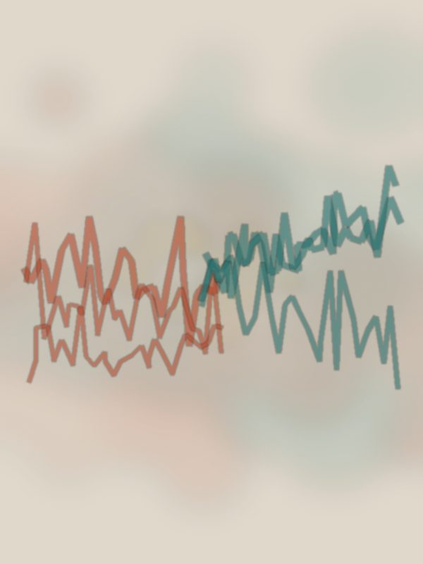

Рисунки в парах
Договориться без единого слова труднее, чем кажется, — и интереснее. Двое берут один лист и десять минут молча ведут на нём общий рисунок: не сговариваясь о сюжете, не показывая жестами, кто что задумал. Картина складывается сама — из того, как две руки уживаются на одном поле. И если сейчас мелькнуло «я не умею рисовать» — это здесь совсем не важно: рисуют не «красиво», а вдвоём.
Зачем это вам
Смысл не в рисунке. За эти десять минут на листе проступает то, что обычно спрятано в любом совместном деле: кто ведёт, а кто идёт следом, где проходит граница между «моим» и «нашим», что происходит, когда двое тянут в разные стороны. Всё это остаётся в линиях — и потом узнаётся в жизни: в паре, в семье, в команде. Иногда общий рисунок говорит о двоих больше, чем час разговора.
- Партнёр и один лист на двоих — чем больше, тем лучше.
- По инструменту на каждого: карандаш, маркер или кисть — что ближе.
- Десять минут и уговор молчать.
- Сядьте с противоположных сторон листа, каждый со своим цветом.
- Единственное правило: не разговаривать и не подсказывать жестами. Сюжет заранее не выбираем.
- Ведите свою линию навстречу другому. Смотрите, что появляется под чужой рукой, и отвечайте на это своей.
- Все десять минут не старайтесь «сделать красиво» — просто продолжайте общий рисунок.
Когда время выйдет, положите инструменты и молча посмотрите на лист вместе. Ещё минуту, не объясняя и не оправдываясь, — просто разглядите, что получилось на двоих.
Как это развивает
- Невербальный контакт — способность понимать и договариваться без слов.
- Чувство границ и общего поля — где заканчиваюсь я и начинается «наше».
- Умение вести и уступать — и делать это вовремя.
Такие вещи интереснее пробовать не в одиночку. Если захочется — приходите к нам на арт-коучинг: там мы как раз рисуем, играем и узнаём друг друга без лишних слов.
#контакт #безслов #парнаяпрактика #арткоучинг #МыДолжныБытьВоображаемы
![[Vi]](assets/img/journal/emoji/znak_vi.png)